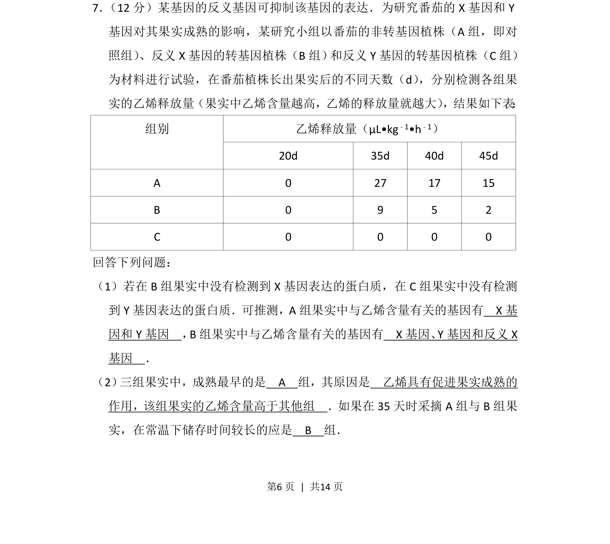
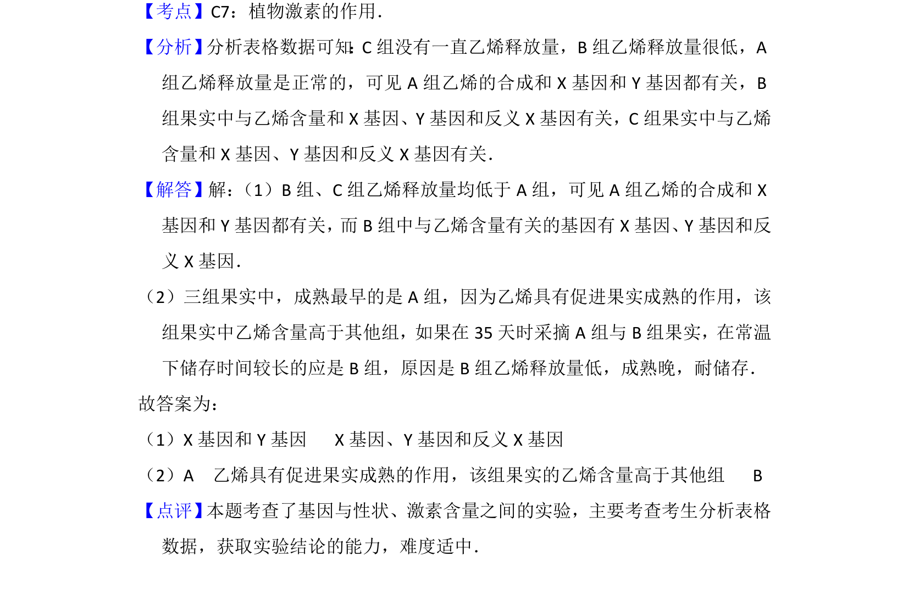

2015-新课标Ⅱ-07
考点：基因表达 反义基因 乙烯生理作用 对照组实验
题面


摘要
研究反义基因抑制X或Y基因对番茄乙烯释放及果实成熟影响的实验分析
关联考点
答案与解析

📄 原 PDF 第 6 页：
素材/真题/吉林/2008-2024·（吉林）生物高考真题/2015年高考生物试卷（新课标Ⅱ）（解析卷）.pdf
题干文本
7． （12分）某基因的反义基因可抑制该基因的表达．为研究番茄的X基因和Y 基因对其果实成熟的影响，某研究小组以番茄的非转基因植株（A组，即对 照组） 、反义X基因的转基因植株（B组） 和反义Y基因的转基因植株（C组） 为材料进行试验，在番茄植株长出果实后的不同天数（d） ，分别检测各组果 实的乙烯释放量（果实中乙烯含量越高，乙烯的释放量就越大） ，结果如下表 ： 乙烯释放量（μL•kg﹣1•h﹣1）组别 20d 35d 40d 45d A 0 27 17 15 B 0 9 5 2 C 0 0 0 0 回答下列问题： （1）若在B组果实中没有检测到X基因表达的蛋白质，在C组果实中没有检测 到Y基因表达的蛋白质．可推测，A组果实中与乙烯含量有关的基因有 X基 因和Y基因 ，B组果实中与乙烯含量有关的基因有 X基因、Y基因和反义X 基因 ． （2） 三组果实中，成熟最早的是 A 组，其原因是 乙烯具有促进果实成熟的 作用，该组果实的乙烯含量高于其他组 ．如果在35天时采摘A组与B组果 实，在常温下储存时间较长的应是 B 组．